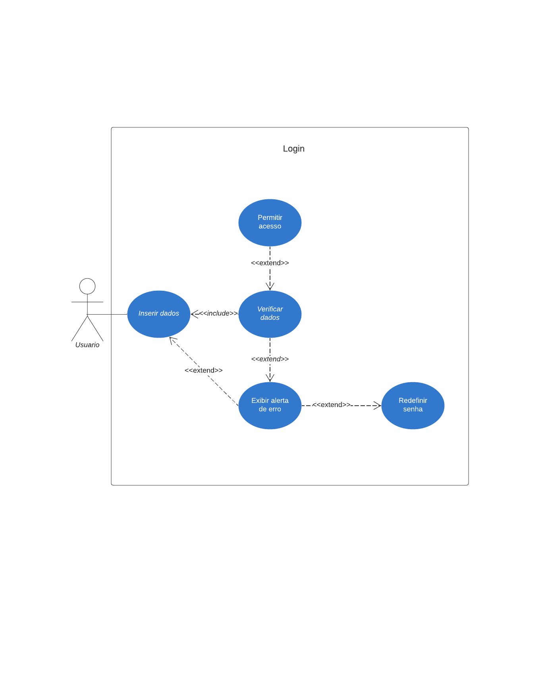
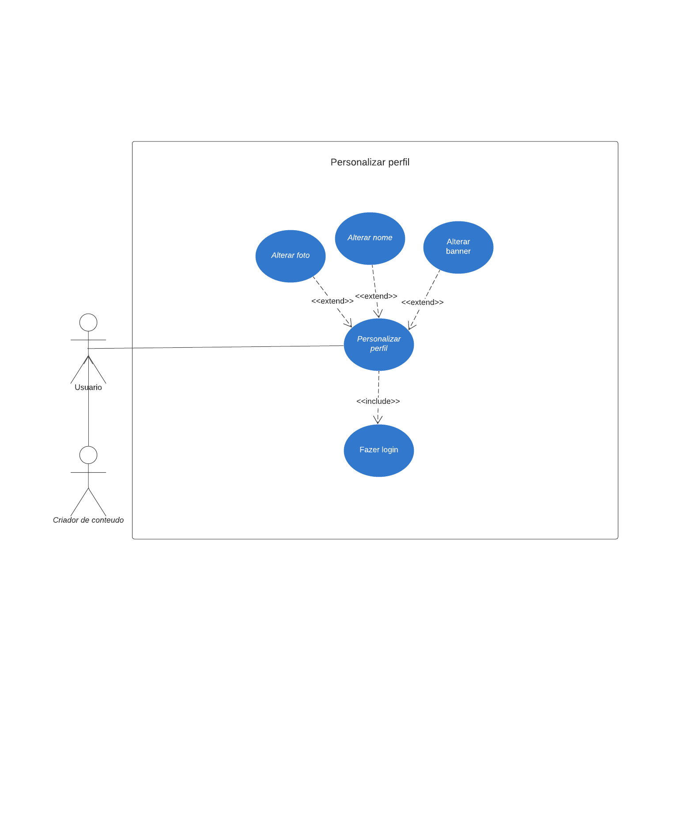
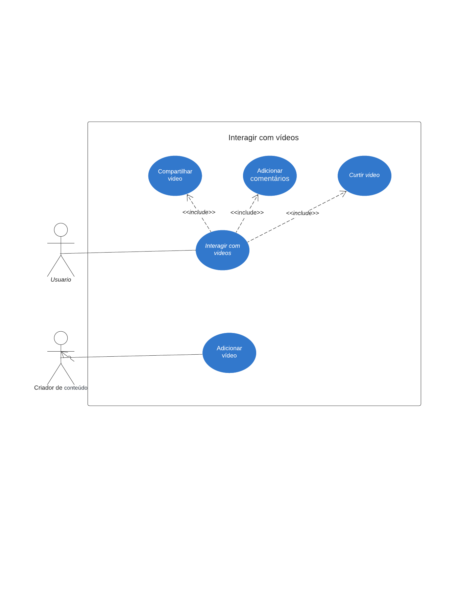
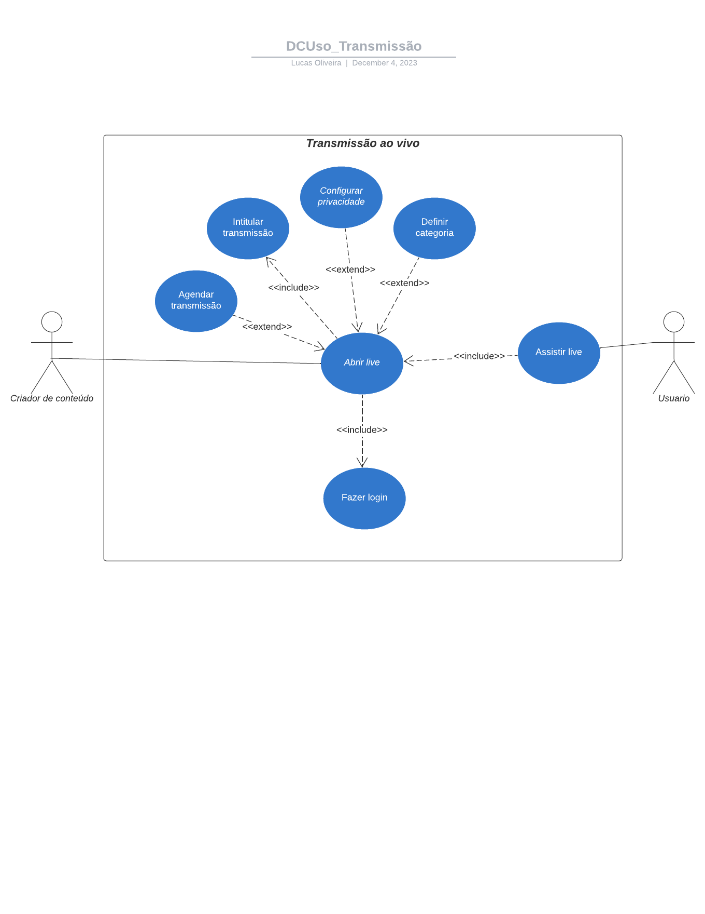

Diagrama de Caso de Uso
- Seleção de Casos de Uso:
Login:

Personalizar perfil:

Interagir com Videos:

Transmissão ao vivo:

- Critérios de Seleção: Os diagramas de caso de uso utilizados foram escolhidos por suas importâncias no desenvolvimento da aplicação
Cenários
Login:
Ator Principal: Usuário
Objetivo:
Permitir que um usuário autentique-se no sistema, acessando sua conta com credenciais válidas.
Pré-condições:
O usuário possui uma conta registrada.
Fluxo Principal de Eventos:
O usuário acessa a tela de login do sistema. O sistema exibe campos para inserção de credenciais (por exemplo,e-mail e senha). O usuário insere suas credenciais. O usuário solicita o login. O sistema verifica as credenciais fornecidas. Se as credenciais são válidas, o sistema autentica o usuário. O sistema redireciona o usuário para a página inicial ou para a última página visitada.
Personalizar perfil
Ator Principal: Usuário
Objetivo:
Permitir que um usuário personalize seu perfil na plataforma.
Pré-condições:
O usuário está autenticado no sistema.
Fluxo Principal de Eventos:
O usuário acessa a seção de configurações de perfil. O sistema exibe opções de personalização, como foto de perfil, informações pessoais, etc. O usuário faz as alterações desejadas. O sistema valida e salva as alterações no perfil do usuário. O sistema confirma que as alterações foram realizadas com sucesso.
Interagir com Vídeos
Ator Principal: Usuário
Objetivo:
Permitir que um usuário interaja com vídeos na plataforma, incluindo visualização, comentários e ação sobre os vídeos.
Pré-condições:
O usuário está autenticado no sistema. Existir vídeos disponíveis na plataforma.
Fluxo Principal de Eventos:
O usuário navega até a seção de vídeos na plataforma. O sistema exibe uma lista de vídeos disponíveis, com miniaturas e informações relevantes. O usuário seleciona um vídeo para visualização. O sistema reproduz o vídeo na interface do usuário. O usuário assiste ao vídeo e pode pausar, retroceder ou avançar. O usuário pode adicionar um comentário ao vídeo. O usuário pode expressar sua apreciação ou desagrado pelo vídeo. O usuário pode compartilhar o vídeo. O sistema atualiza as estatísticas do vídeo com base na interação dos usuários.
Transmissão ao Vivo
Ator Principal:
Criador de conteúdo
Objetivo:
Permitir que um criador de conteúdo inicie e gerencie uma transmissão ao vivo na plataforma.
Pré-condições:
O Criador de conteúdo está autenticado no sistema.
Fluxo Principal de Eventos:
O criador de conteúdo acessa a seção de transmissão ao vivo na plataforma. O sistema exibe opções para iniciar uma nova transmissão ao vivo. O criador de conteúdo configura os detalhes da transmissão, como título, descrição e configurações de privacidade. O usuário inicia a transmissão ao vivo. O sistema configura a conexão e começa a transmitir o vídeo ao vivo. Durante a transmissão, o criador de conteúdo pode interagir com espectadores. Ao finalizar a transmissão, o criador de conteúdo encerra a transmissão ao vivo. O sistema conclui a transmissão e fornece opções para salvar ou descartar a gravação da transmissão..